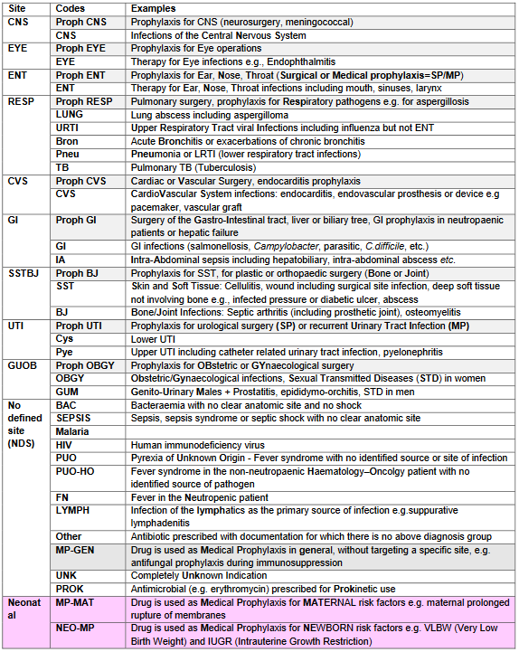
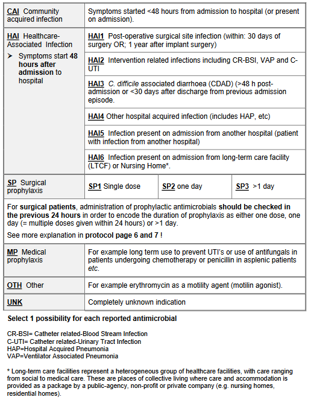
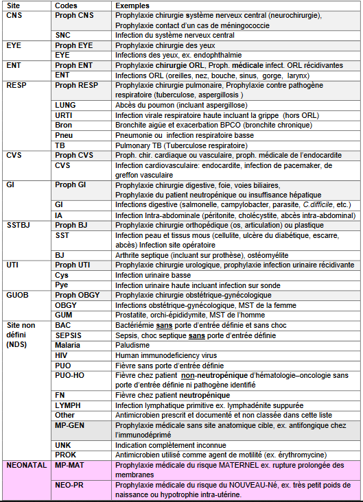
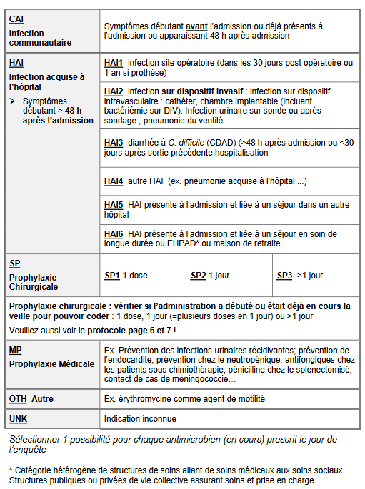

Codes & explanation MSF PPSl-EN&FR
EXPLANATION TO FILL THE FORMS (from Global PPS 2019)
1-Activity: M=Medicine (including psychiatric cases) S=Surgery (including orthopaedics, obstetrics and gyn...) IC=Intensive Care
2-Patient Identifier: A unique patient identifier that allows linkage to patient records at local level for more detailed audit. This unique identifier will not be included in the online database (DHIS2 or GPPS)
3-Survey Number: if you contribute to GPPS only: A unique non identifiable number given by WebPPS for each patient entered in the database. Leave blank but note down the number after the patient data has been recorded in the online database. The number is displayed once (and only) after the patient data has been recorded in the online database.
4-Patient Age: If the patient is 2 years old or older, specify only the number of years, if between 1 and 23 months specify only the number of months, if less than 1 month specify the number of days.
5-Antimicrobial Name:Insert generic name.
6-Single Unit Dose:Numeric value for dose per administration (in grams, milligrams or IU).
7-Unit: The unit for the dose (g, mg or IU)
8-Doses/day:If necessary provide fractions of doses: (e.g., every 16h = 1.5 doses per day, every 36h = 0.67 doses per day, every 48h = 0.5 doses per day)
9-Route: Routes of administration are: Parenteral (P), Oral (O), Rectal (R), Inhalation (I).
10-See diagnoses groups list (Appendix II)
11-See Indication codes (Appendix III). If you are not contributing to GPPS, use: CAI/HAI/SP
12-Reason in Notes: A diagnosis / indication for treatment is recorded in the patient’s documentation (treatment chart, notes, etc.) at the start of antibiotic treatment (Yes or No)
13-Guideline Compliance: Refers to antibiotic choice (not route, dose, duration etc) in compliance with local guidelines (Y: Yes; N: No; NA: Not assessable because no local guidelines for the specific indication; NI: no information because indication is unknown
14-Duration adequacy: Note “Yes” if the duration planned the day of the survey is fitting with the guideline and is respected until now , “no” if duration the day of the survey or the planned duration is out of recommendations, “NA”: non assessable if the day of the survey, duration is in the recommended range but no stop/review date documented.
DIAGNOSIS CODES (from GPPS 2019)

TYPE OF INDICATION (from GPPS 2019)

EXPLICATIONS POUR REMPLIR LES FORMULAIRES (issues du Global PPS)
1-Activité:M: médecine (incluant psychiatrie, etc.), S: Chirurgie (incluant orthopédie, gynécologie-obstétrique,etc.), IC:soins intensifs, réanimation
2-Identifiant unique lié au patient au niveau local pour éventuelles vérifications. Ne sera pas inclus dans la base de données (ni DHIS2, ni GPPS).
3-Survey number: A ne considérer que si participation au GPPS. Numéro unique généré par le programme de saisie WebPPS pour chaque patient inclus dans la base de données du GPPS. Ne pas saisir dans la base de données mais noter sur la fiche d’enquête. Ce numéro apparaît une fois (seulement) après entrée et sauvegarde des données du patient.
4-Age du patient: Patient de plus de 2 ans: noter seulement le nombre d’années; patient entre 1 et 23 mois : noter seulement le nombre de mois; patient de moins d’un mois: noter le nombre de jours
5-Nom de l’ antimicrobien:Nom générique
6-Dose unitaire:Nombre de grammes, de milligrammes, de UI par administration.
ATTENTION, le type d’unité (g, mg, IU) utilisé pour exprimer la dose unitaire est codé dans une case séparée (cf. ci-dessous)
7-Type d’unité utilisée pour exprimer la dose (g, mg or IU)
8-Nombre de doses par jour (ex. toutes les 16h = 1.5 dose /jour; toutes les 36h = 0.67 dose / jour; toutes les 48h = 0.5 dose / jour)
9-Voie d’administration: Parentérale (P), Orale (O), Rectale (R), Inhalation (I)
10-Liste des codes diagnostiques: cf annexe II
11-Liste des codes de circonstances de prescription: cf annexe III Ne notez que CAI/HAI et SP si absence de participation au GPPS.
12-L’indication retenue pour la prescription est-elle mentionnée dans le dossier au moment du début du traitement? (Oui ou non)
13-Le «choix» de l’antibiotique ne pas prendre en compte la dose, la voie d’administration, la durée etc...) est en accord avec des recommandations locales[O:Oui; N: Non; NA («not assessable») : pas de recommandation pour l’indication retenue ; NI: («no information») car l’indication est inconnue]
14-Durée correcte du traitement: Notez “oui” si la durée prévue et le jour de l’étude est correcte, “no” si la durée le jour de l’étude et/ou la durée prévue ne correspond pas aux guides, “NA”: non assessable si le jour de l’étude la durée est correcte mais qu’il n’y a pas de date de fin documentée.
CODES DIAGNOSTIQUES (issus du GPPS 2019)

CIRCONSTANCES DE PRESCRIPTIONS (issues du GPPS 2019)
